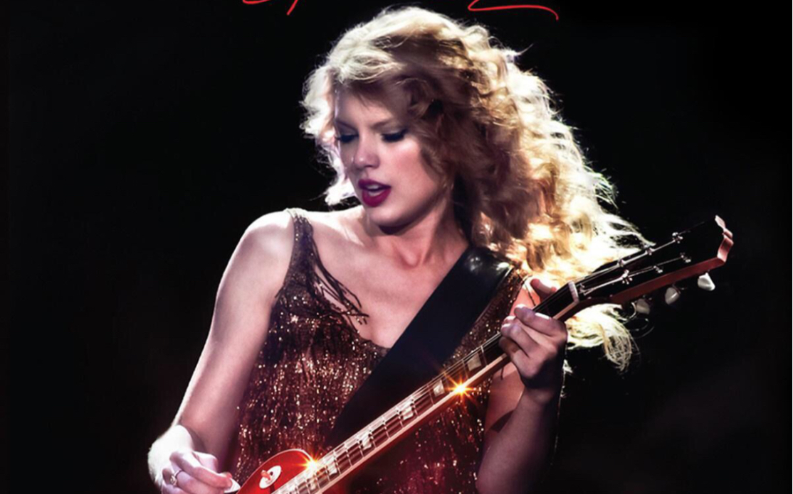

Taylor Swift
1. A Place in This World
2. Cold as You
3. The Outside
4. Tied Together with a Smile
5. Mary's Song (Oh My My My)
6. Our Song
7. Picture to Burn
8. Teardrops on My Guitar
9. A Perfectly Good Heart
10. Should've Said No
11. Stay Beautiful
Taylor's Journey
16岁の泰勒·斯威夫特，抱着木吉他，从宾夕法尼亚的乡村小镇来到纳什维尔。她像所有怀揣梦想的年轻人一样，在陌生城市里寻找自己的位置。首张同名专辑里的《A Place In This World》，就像她当时的内心独白——"我还在寻找，属于我的位置"。
那时候的她，是个会在笔记本上写满少女心事的普通女孩。《Tim McGraw》唱着暗恋的酸涩，《Teardrops on My Guitar》讲着爱而不得的遗憾，每一首歌都是她真实的青春记录。她用最朴素的乡村旋律，唱出每个女孩都有过的心动与心碎。

这个阶段的泰勒，还不知道自己未来会成为怎样的巨星。她只是一个抱着吉他、想在这个世界找到一席之地的乡村少女，简单、纯粹，却又无比坚定。
平凡世界专辑歌曲高频词
🖱 拖拽旋转 · 滚轮缩放